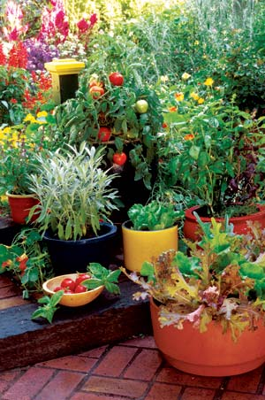
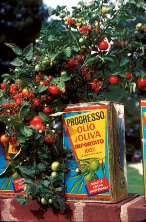
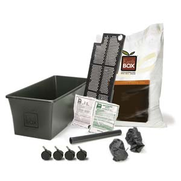
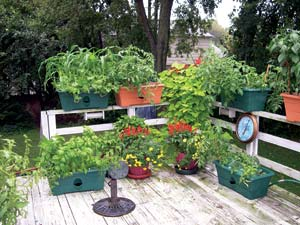
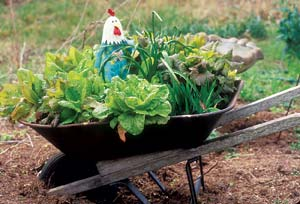
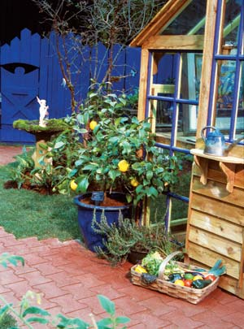
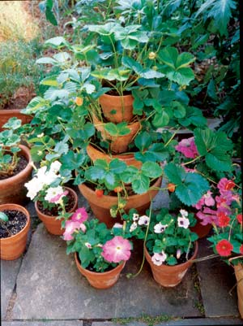
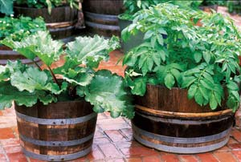
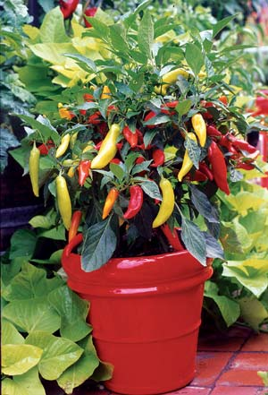
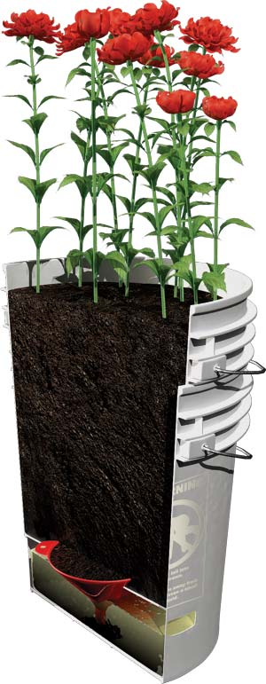

If you don’t have the space or time to have a garden in the earth, you still can grow a significant amount of healthy, tasty food ... in containers. Any sunny spot will do, whether it’s in your yard, on your patio, deck or balcony, or even inside your home or apartment. Not only is container gardening possible, but it’s fun and fairly easy to grow virtually anything grown in a conventional garden.
In some ways, gardening in a container is easier than gardening in the ground. Container-grown vegetable plants have slightly smaller yields than plants grown in the ground, but there are fewer, if any, weeds. Some pests are less likely to be a problem, because your container garden is in a location that pests don’t expect to find food. Diseases also are easier to avoid, because your potting soil is less apt to harbor them than ground soil. You need few tools beyond a trowel, and you don’t need to cultivate the soil. Containers, at least the smaller ones, can be moved around and brought indoors when frost threatens. And you can set your garden at whatever height is comfortable and convenient; you can even garden sitting down if you like!
There are two container options. The first is what I’ll call traditional containers, which consist of anything that can hold some soil and has a hole in the bottom to drain excess water. The second option is self-watering containers, which arrived on the market a few years ago. They have a reservoir for water that is connected to the soil in the rest of the container, which ensures that the water is continually available to the growing plants. As long as there’s water in the reservoir, soil throughout the container is evenly moist.
For vegetable plants, most of which are larger than the flowers typically grown in containers, a suitable container can be either a large flower pot, or something originally meant for some other use: an old wash tub; a pail or sap bucket; half of a whiskey or wine barrel; or a plastic bucket that once held doughnut filling or sheet rock compound. And because they can be recycled objects, traditional containers often are inexpensive or free. Just avoid containers that previously held chemicals.
Choose a container large enough for the plant you want to grow - the bigger the plant, the bigger the pot. A large tomato plant needs about 30 to 40 quarts of soil; a pepper or eggplant can make do with 15 to 20. Fill the container with moist container soil (see “Selecting Soils,” below) and add water. Then add more water.
You can grow large plants such as corn or squash in containers, but make sure your container garden site has full sun. The same is true for tomatoes, peppers and eggplant. You can get away with partial shade for spinach, lettuce, bok choy and other leafy greens.
Because vegetable plants tend to be bigger and grow faster than most flower and herb plants, they need much more water. And they need it all the time in order to grow well and produce tasty and nutritious vegetables. The soil in even a large traditional container simply cannot receive and hold as much water as many vegetable plants need on a daily basis.
If you use traditional containers, plan to water at least once a day, and more often for large plants or during hot, dry or windy weather. A mature tomato plant needs a gallon of water a day. There’s no wiggle room here; vegetable plants that don’t get enough water when they need it become stressed, and don’t produce as well. This means that a traditional container gardener has to be available to water the garden once a day - or more than once - every day.
Traditional containers are best watered just before they need it. You want to avoid stressing the plants by letting the soil go dry, but don’t want to water more frequently than is necessary because you do have other things to do. In my experience the critical variable here is time; it takes a certain number of hours for a plant of a certain size in a container of a certain size to use up the available water. Because water use varies with the age and size of a plant, I usually water everything whenever the thirstiest plants need water, just to keep things as simple as possible.
Looking for a way to cut back on how often I had to water my container garden, I tried self-watering containers and found that I needed to water much less often. Self-watering containers with big tomato or squash plants, or closely spaced lettuce or mesclun mixes, needed water every three or four days, but younger, smaller plants got by with water once a week. No plants needed daily watering. These containers make it possible for the container gardener to have a life beyond the garden.
I also got a nice surprise: I found that virtually all the vegetable plants I grow in my regular gardens grow at least as well in self-watering containers. Some grow better. Artichokes or eggplant can’t be conventionally grown in my area due to the short season, but in a self-watering container, they grow fast enough. Why?
It appears that water is the key. As long as there is water in the reservoir, the soil throughout the container is always moist, and the plants growing in it always have enough water, but not too much. In a traditional container, the soil contains as much water as it can hold only for a short time after watering. From then on, the soil - and the plants growing in it - have progressively less water available. Plants become stressed and suffer some interruption of growth whenever they have insufficient water, and self-watering containers eliminate that possibility.
Most self-watering containers are rectangular plastic, in some shade of green or brown. But there also are round, square and hanging containers in many other colors. They have various ways to get the water from the reservoir to the soil, and different ways to add water to the reservoir and register the water level. And, in my experience, they all work, although some inexpensive containers advertised as self-watering have reservoirs that are too small to offer any advantage over traditional containers.
The critical differences have to do with size: How much soil can it hold (and how deep is the soil?), and how much water? Big plants need big pots (I like about 40 quarts of soil for artichokes or summer squash). Soil 8 inches deep satisfies most plants, and 5 or 6 inches is enough for salad greens, but carrots need 12 inches. Reservoirs need to be big enough to allow at least three or four days between waterings. I like at least 1 quart of water for every 8 quarts of soil, but more is better. Self-watering containers are available from the suppliers listed below, and you also can make your own - see “DIY Self-watering Container,” below.
Self-watering containers greatly simplify things. If there is water in the reservoir, there’s enough water in the soil, period. Simply refill the reservoir before it’s empty - unless rain is in the forecast. If excess water flows out the overflow hole(s), it will take valuable nutrients with it.
Soil in either a traditional or a self-watering container provides plants with water and food. In a traditional container, the soil needs to receive and hold as much water as possible. In a self-watering container the soil needs to be able to absorb water from the reservoir and disperse it evenly throughout the container. Both tasks are best accomplished by a soil containing peat moss and some perlite and/or vermiculite. Peat has a unique ability to absorb and hold moisture. (Yes, there are questions about the sustainability of this slowly renewable resource, but we think limited use of peat for container and seed-starting mixes is OK. - Mother)
I like to recreate as nearly as I can the conditions that work best in my regular garden, so I use soil that contains about 50 percent compost. I’ve had excellent results using a 50-50 mix of good compost and sphagnum peat-based potting soil. If you have any doubts about the compost quality, add about a cup of balanced organic fertilizer per 40 quarts of soil mix. I make my own fertilizer blend: one-third cup each of green sand, rock phosphate or bone meal and a nitrogen source such as alfalfa or soybean meal. I add a tablespoon of Azomite - a rock dust that provides micronutrients and trace minerals.
Note: When peat-based soil dries out, it does not re-absorb water well, and it does not properly wick water. A dry traditional container must be watered, then watered again in a few minutes, until the soil is evenly moist. A dry self-watering container needs water on the soil surface until even moisture is restored. Then fill the reservoir.
Best of luck with your new versatile, low-maintenance container garden!
You can make your own self-watering container from a couple of 5-gallon plastic buckets. (From our food co-op, I’ve scored free buckets that had housed peanut butter and other such things.)
Materials:
2 5-gallon plastic buckets
1 plastic funnel (from hardware or home supply stores)
Tools:
Drill with a quarter-inch bit
Saber saw
Earth Box; Scranton, PA.; 800-821-8838
Gardner's Supply; Burlington, Vt.; 800-876-5520
The Garden Patch; St. Petersburg, Fla.; 800-519-8144
|
 ROSALIND CREASY Containers, both traditional and self-watering, allow you to grow just about anything you would normally grow in the ground on a patio, deck or balcony. |
 WALTER CHANDOHA Just about any container can be used for food crops, as long as it holds enough soil to support the plant’s roots. |
 EARTH BOX Self-watering containers come in easy, inexpensive kits |
|
 THE GARDEN PATCH Container gardens need a lot of water. Self-watering models such as these can eliminate some of the work and worry of container gardening. |
 WILLIAM D. ADAMS This quirky salad garden can be wheeled indoors when frost or other undesirable weather threatens. |
 RICK WETHERBEE If your container garden gives you lemons, make lemonade! |
|
 WALTER CHANDOHA Strawberries make a fruity addition to this container garden. |
 ROSALIND CREASY Potatoes and rhubarb in whiskey barrels. |
 ROSALIND CREASY A pretty pot of peppers. |
|
 NATE SKOW Make this easy DIY self-watering container. |
|
|